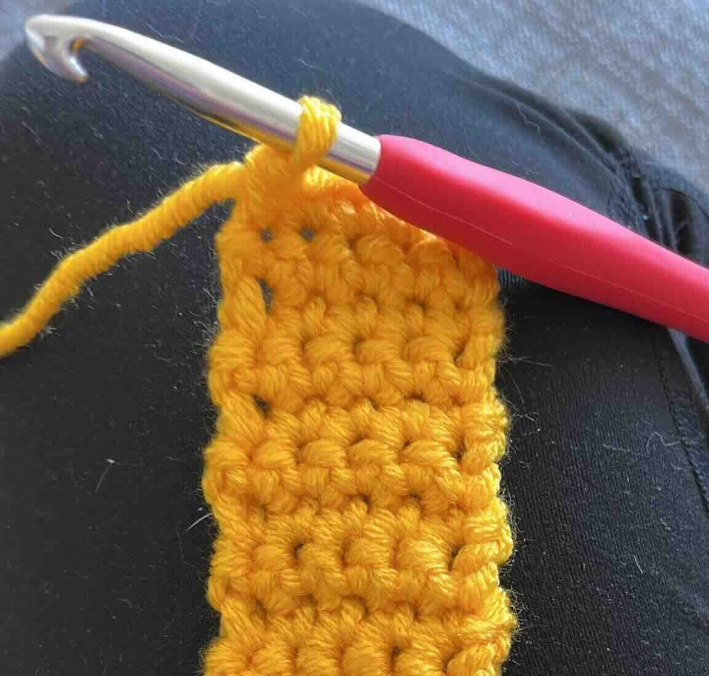
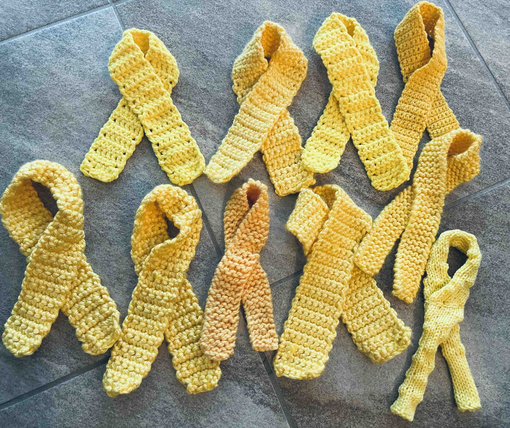
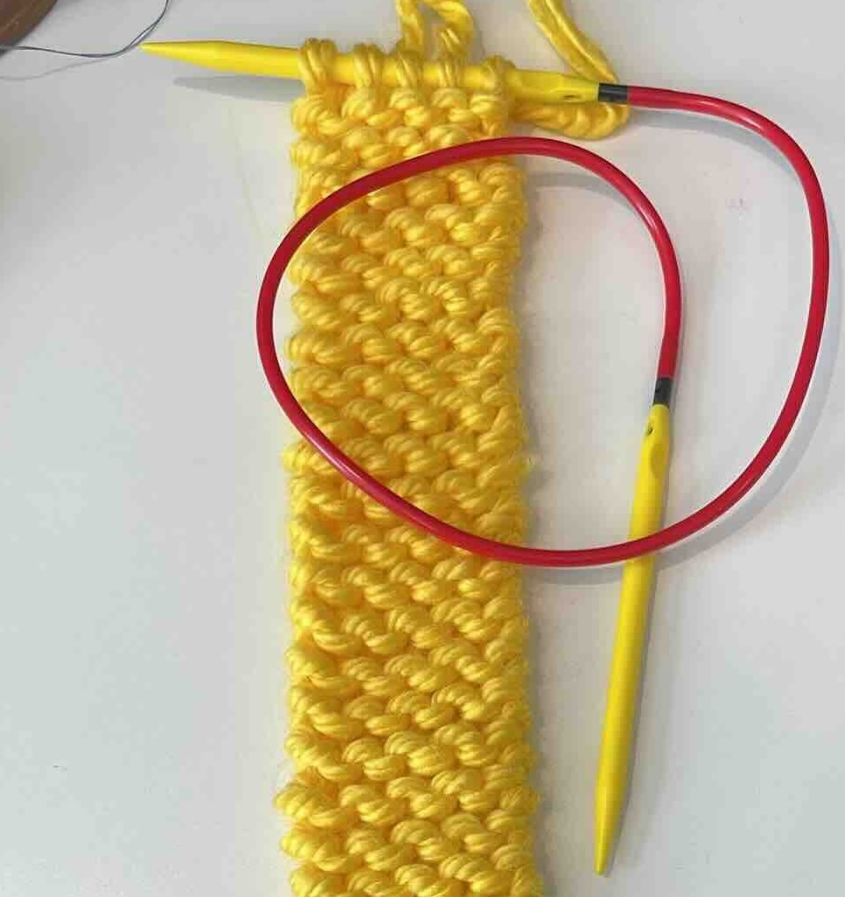
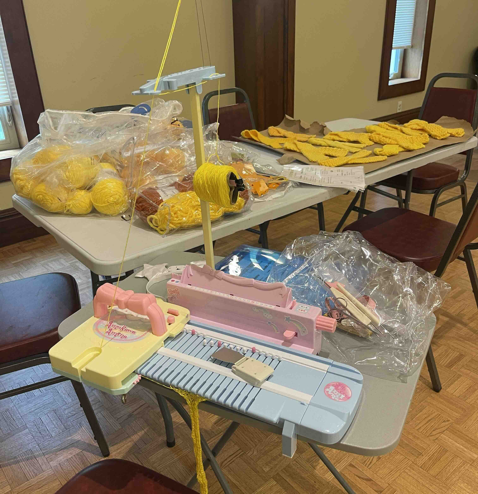
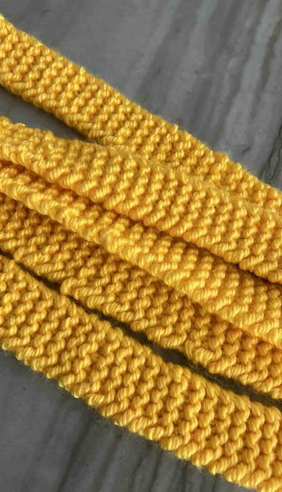
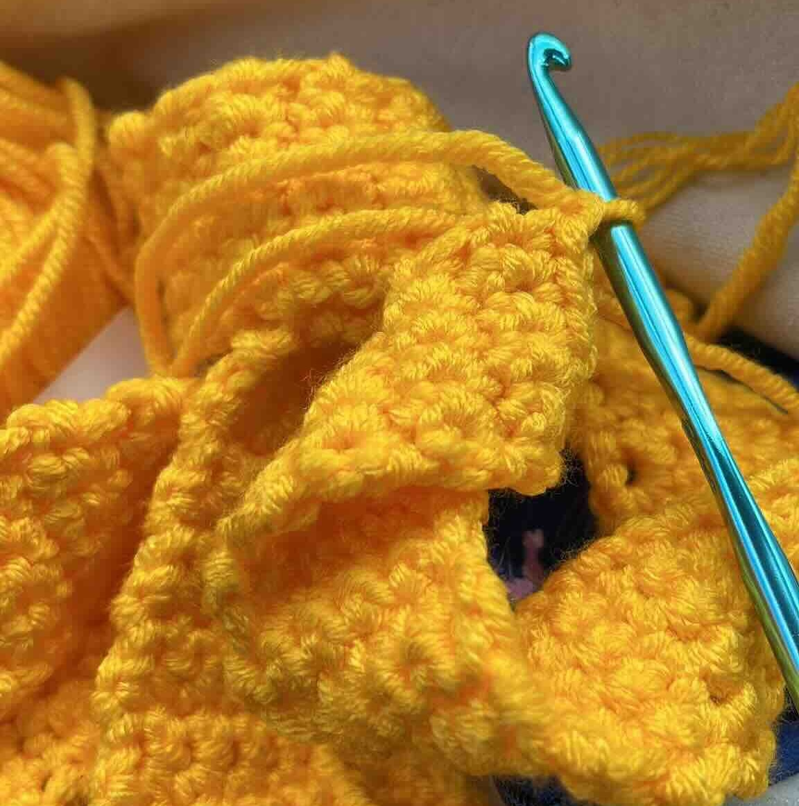
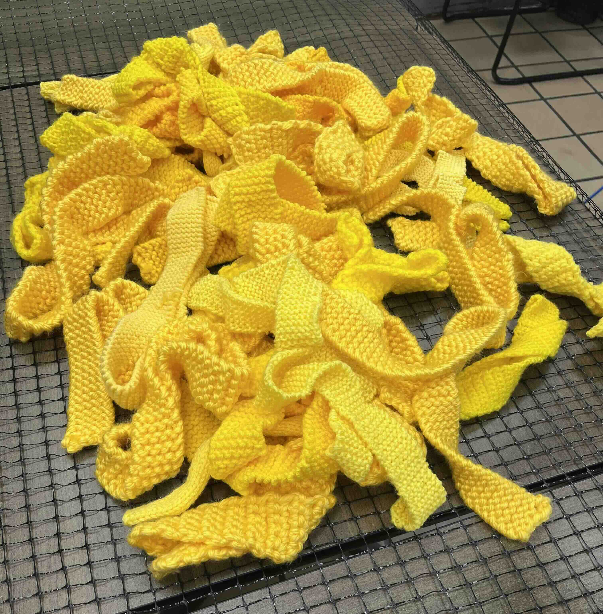
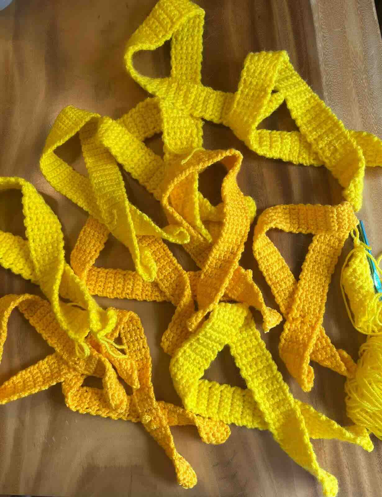
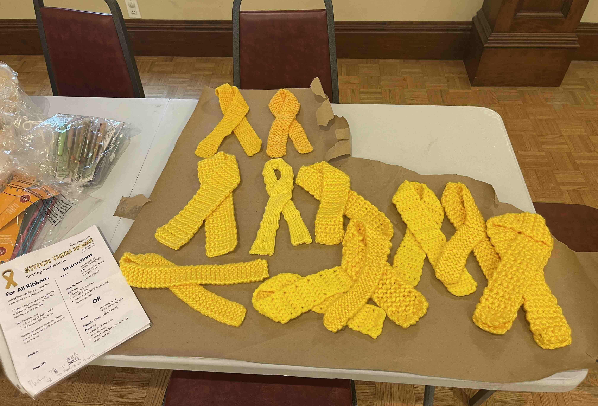

Participate
Show your support by knitting or crocheting a few yellow ribbons or creating one for each hostage. These ribbons can be prominently displayed in a public space or used to create a larger art installation in collaboration with fellow knitters and crocheters.
Download the patterns to begin. Then, display the ribbons on chain-link fences, trees, or walls using zip ties, staples, or yarn ties.
These knit and crochet beginner-friendly patterns work with a range of yellow acrylic yarns.



The project information sheet provides yarn suggestions.



And the pattern sheets provide knitting needle and crochet hook sizes, finished ribbon measurements, and finishing details.



Tag your projects with @StitchThemHome and #StitchThemHome.
We are currently seeking additional locations to host these public art installations. If you're interested in bringing a #StitchThemHome installation to your community, please get in touch with us at membership@tabletmag.com.